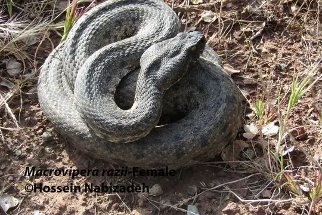

Macrovipera
The genus Macrovipera (family Viperidae) has 3 living species in SnakeList (all venomous), recorded in 12 countries; 1 fossil species is listed separately.
- 3living species
- 3venomous
- 12countries
- 1fossil
About the genus
A genus of the family Viperidae (vipers and pit vipers).
Species
Showing 3 species
- No photo yetCyclades Blunt-nosed ViperMacrovipera schweizeri
 Levantine ViperMacrovipera lebetinus
Levantine ViperMacrovipera lebetinus
Razi's ViperMacrovipera razii
No snakes in Macrovipera match.
Fossil species
This species is known only from fossils. It is not a living species and is not counted in this page’s totals. The geological age given is approximate: it comes from the rock layers the fossils were found in, and the dating and classification of fossil snakes are revised as new material is studied.
- Macrovipera gedulyi (late Miocene, about 6 million years ago)
About the genus Macrovipera
Compare its species
Its living species side by side. Lengths come only from SnakeList’s reviewed, sourced accounts; the others are left blank rather than guessed.
| Species | Venom | Recorded in | Adult length (reviewed accounts) |
|---|---|---|---|
| Cyclades Blunt-nosed Viper Macrovipera schweizeri | Venomous | 1 country (Asia) | No reviewed account yet |
| Levantine Viper Macrovipera lebetinus | Venomous | 11 countries (Asia, Europe) | No reviewed account yet |
| Razi's Viper Macrovipera razii | Venomous | 1 country (Asia) | No reviewed account yet |